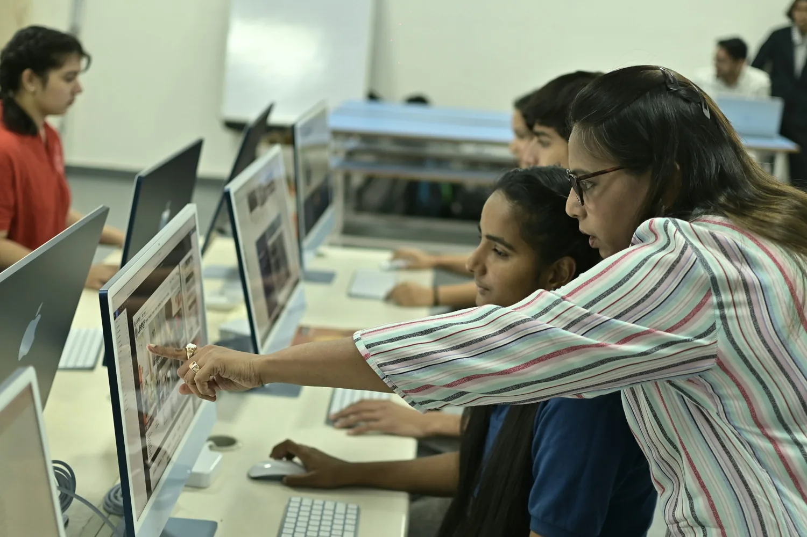

Tecnología · I.E. La Unión
Que nada
detenga la clase.
Un problema técnico no debería robarte la hora. Encuentra una solución guiada o cuéntale a soporte qué está pasando.
06categorías
18soluciones guiadas
7–16lun–vie · atención

Acompañamiento que sigue en el aula
¿Por dónde empezamos?Cuéntanos qué dejó de funcionar.
↗
Una guía clara, paso a paso.Desliza para explorar
Te ayudamos con
ComputadoresConectividadProyecciónImpresiónCuentas
01 — Diagnóstico
Vamos a encontrar
el origen.
Elige lo que más se parece a tu problema. Te guiaremos por comprobaciones seguras y sencillas.
Asistente de soluciónSin tecnicismos, sin adivinar.
Paso 1
02 — Guías rápidas
Soluciones para
seguir avanzando.
Una primera revisión puede resolver lo más común. Abre una guía y sigue los pasos con calma.
Cuida los equipos: no abras computadores, proyectores ni gabinetes de red. Para fallas internas, registra el problema y avisa a soporte.
03 — Soporte
¿No se resolvió?
Lo vemos contigo.
Cuéntanos dónde ocurre y qué probaste. Con esos detalles, el equipo puede llegar preparado.
Correo de soportesebascastroj70@gmail.com
Atención presencial
Lunes a viernes, 7:00–16:00
Lunes a viernes, 7:00–16:00
REPORTE DE INCIDENCIA
* Obligatorio